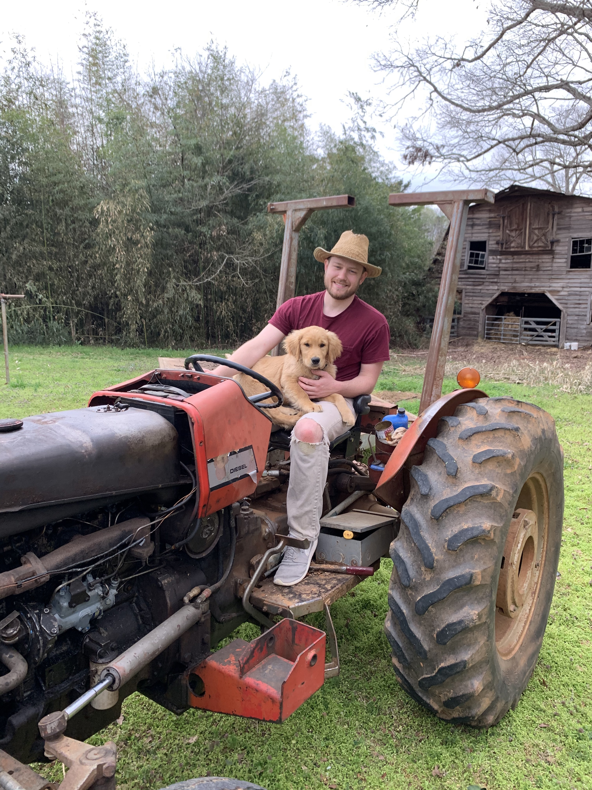

About Jared C. Gober

Jared is an aspiring author living in Charlotte, NC. He lives on a farm with his wife where he works with chickens, cattle and crops in the mornings and writes in the evenings. Jared has enjoyed writing since an early age and as a kid he would often attempt to write romance driven fantasy stories. For four years now Jared has been developing the lore and crafting the plot for his latests series, The Summoners War. Jared coded this website himself in order to assist with getting his book published. When Jared isn't writing books or code, and all the farm animals have been cared for, you can find him on the couch snuggled up with his two cats and two dogs, reading a book or watching soccer!